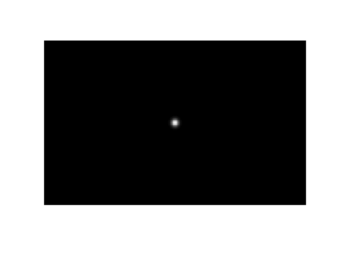

Blurring and deblurring with opConvolve
The convolution operator is often used in signal processing as a technique for filtering and noise removal. In image processing, for example, convolution can be used to blur images or remove noise. First, a "kernel" matrix (or blurring filter) is created. This kernel is overlayed onto a block of pixels in the image, and each of its entries is multiplied with the corresponding pixel value. These products are then summed to find the new value of the block's center pixel. The kernel then slides by one pixel and the operation is repeated. The new value of each pixel is a weighted average of the neighbouring pixel's original values. This diminishes sharp contrasts between pixel intensities, blurring the edges in the image.
The Spot opConvolve operator does not do the convolution directly; since a convolution in the spatial domain is equivalent to a multiplication in the frequency domain, it instead performs a discrete Fourier transform, scales the frequencies, then performs an inverse discrete Fourier transform. However, it can be used simply by passing in a kernel, the size of the matrix it will be applied to, and the "offset" and "mode" parameters:
opConvolve(M,N,KERNEL,OFFSET,MODE)
This example will demonstrate how to blur an image using opConvolve and two different types of kernel. We will then deblur it using the same operator.
Contents
Using a Uniform Kernel
First load the clown image and plot it:
load clown
[m,n] = size(X);
N = m*n;
plotimage(X)

Create a uniform kernel matrix with entries that sum to one:
kernel = (1/9)*ones(3)
kernel =
0.1111 0.1111 0.1111
0.1111 0.1111 0.1111
0.1111 0.1111 0.1111
Create the convolution operator using the kernel, the kernel center (2,2), and the 'truncated' mode so that it will be the same size as the clown image:
A = opConvolve(m, n, kernel, [2,2], 'truncated')
A =
Spot operator: Convolve(64000,64000)
rows: 64000 complex: no
cols: 64000 type: Convolve
Convert the image matrix X into a vector. You can then apply the convolution operator A to it, resulting in a new vector, y. Reshaping this "convolved" version into an image matrix and plotting it, we see that it is a blurred version of the original image.
x = X(:); y = A*x; Y = reshape(y, m, n); plotimage(Y)
Now try using a larger kernel:
kernel = (1/49)*ones(7);
A = opConvolve(m, n, kernel, [4,4], 'truncated');
y = A*x;
Y = reshape(y, m, n);
plotimage(Y)
Using a uniform convolution kernel on an image is called a "mean filter", since each pixel is given the average value of itself and the surrounding pixels. A larger kernel resulted in more blurring because each average included more of the surrounding pixels.
Gaussian Blur
Often, kernels are weighted, for example using the Gaussian (normal) distribution, so that the center pixel of the kernel has more influence over its final value than its neighbouring pixels. Here we create a new kernel using the Gaussian point spread function:
[K,center] = psfGaussian(m,n,3);
A = opConvolve(m, n, K, center, 'truncated');
The third argument to this psfGaussian function determines the standard deviation of the Gaussian distribution, or how quickly the values diminish to zero. Therefore, using a larger standard deviation will make a "larger" kernel, and cause more blur. Compare the distribution we've used (first image) to one with standard deviation 6 (second image):
[K2, center2] = psfGaussian(m,n,6); figure(1); plotimage(K) figure(2); plotimage(K2)
Now apply the convolution operator that we made with standard deviation 3:
y = A*x; Y = reshape(y, m, n); figure(1); plotimage(Y)
You can see the difference in the amount of blurring if we use the version with a larger standard deviation:
A = opConvolve(m, n, K2, center2, 'truncated');
y = A*x;
Y = reshape(y, m, n);
figure(2); plotimage(Y)
Deblurring
To blur, we started with the original image x and applied the blurring operator A to get the blurred image y; in other words, Ax = y. The next step is trying to deblur. Assuming that we have the blurring operator A, we could try multiplying the inverse of A with y, but this only works if A is invertible. The more general solution is to perform a left matrix division (A\y), which is implemented by solving the least squares problem
where z is our reconstruction of the image (which should look as much possible like x). Let's use this approach to deblur the last blurry image we made (the Gaussian kernel with standard deviation 6). Unfortunately, even when we have the blurring operator A, we won't be able to exactly recreate the original image, as some information was lost in the blurring process. The reconstructed image is on the right:
z = A \ y; Z = reshape(z, m, n); figure(1); plotimage(Y) figure(2); plotimage(Z)
The image is less blurry, but you can see some "ringing" artifacts along the clown's cheek and in other areas that should be smooth. These effects can be diminished through regularization, which instead solves the problem
This requires the solution to the least squares problem (the deblurred image) to be smoother. The constant c determines how smooth the solution is required to be. By concatenating a scaled identity matrix to our blurring operator A and a zero matrix to the image y, we modify the left divide operation so that it solves
which simplifies to the first equation. In the code below, we have chosen .
AI = [A; 0.1*opEye(N)]; y0 = [y; zeros(N,1)]; z = AI \ y0; Z = reshape(z, m, n); figure(1); plotimage(Y) figure(2); plotimage(Z)
Building Your Own Blurring Operator
This example used opConvolve to build an operator that acts as if it's doing a complete convolution. As mentioned in the introduction, opConvolve is actually implemented with a discrete Fourier transform, since a convolution in the spatial domain (where the kernel matrix is multiplied by blocks of pixels repeatedly) is equivalent to a multiplication in the frequency domain (where the frequencies are scaled to diminish the high-frequency components that represent sharp edges and noise).
You could create the convolution operator A yourself by multiplying a series of operators; one to perform a DFT, one to scale the frequencies, and one to perform an inverse DFT. This operator could be handled exactly as the operator from this demo; to blur you would simply apply it to the image matrix using A*x, and to deblur you would use A\y.
Note: When you create an orthogonal operator like opDFT2, it "knows" it's orthogonal. Since the transpose of an orthogonal operator is equal to its inverse, in the three norm calculations below, inv(F)*w and F\w are both implemented as F'*w:
F = opDFT2(m,n); % DFT operator; orthogonal w = F*x; % Fourier transform of image norm( F'*w - x, inf ) norm( inv(F)*w - x, inf ) norm( F \w - x, inf )
ans = 4.2633e-14 ans = 4.2633e-14 ans = 4.2633e-14
This means that when you create your convolution operator with A = Finv*S*F, where S is some scaling operator, the same efficient F' operation will be used whether you write inv(F)*S*F, F'*S*F, or F\S*F.